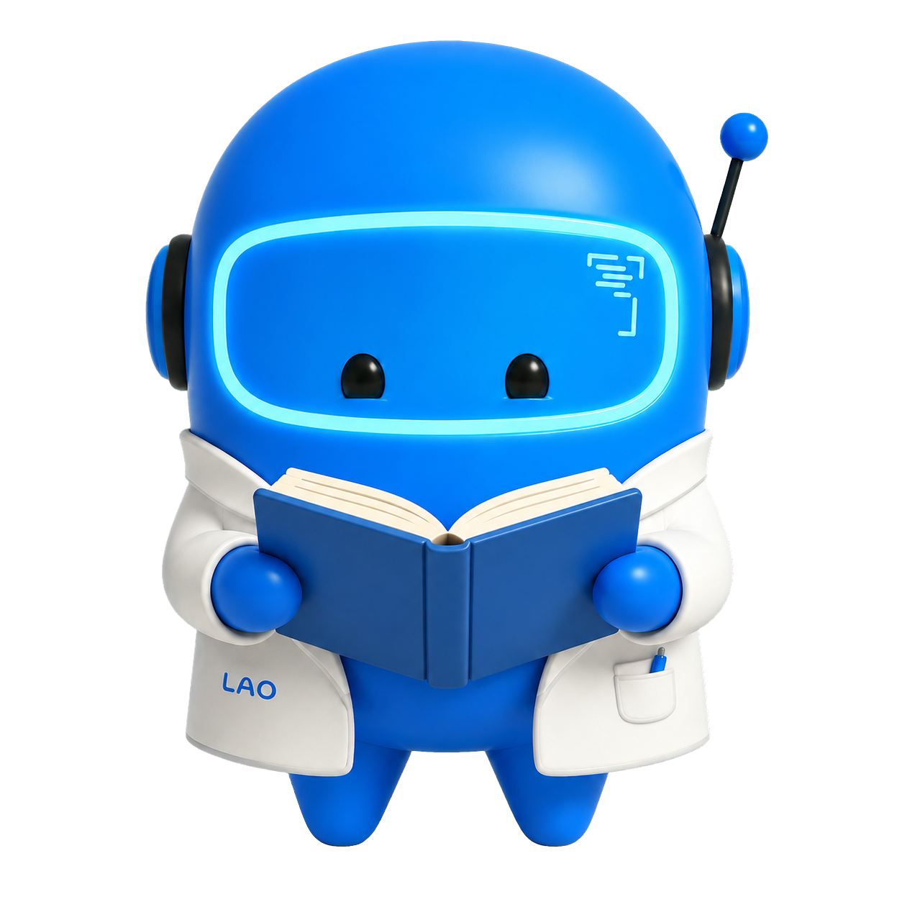
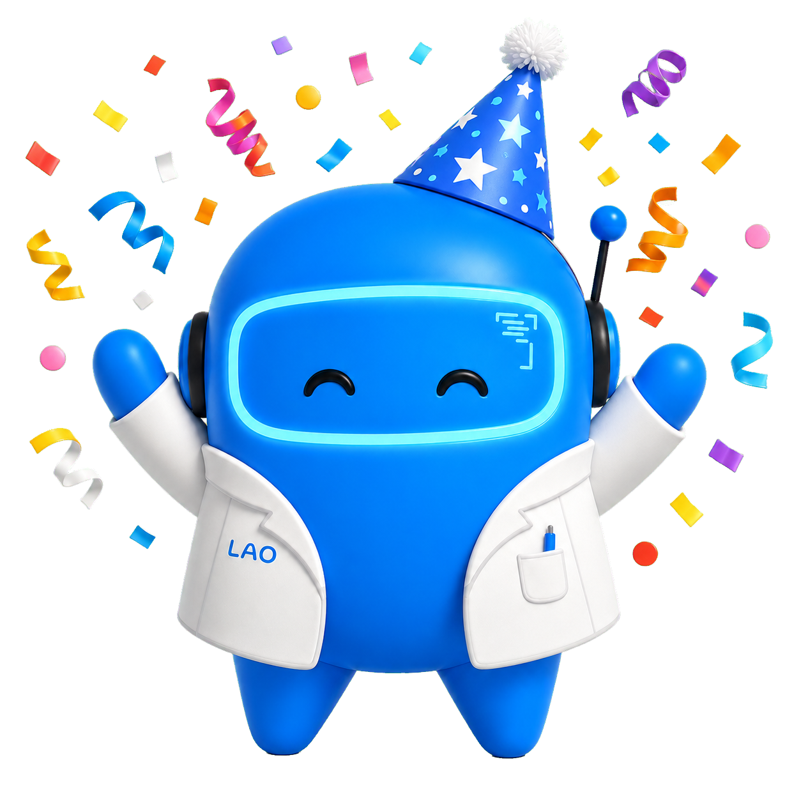

Como sairemos de grep, glob e read em arquivos markdown a um motor de memória atômica com resolução de conflitos temporais e indexação topológica.
Antes de aprofundarmos no problema, o que exatamente significa o nome Tessera?
Em vez de arquivos de log gigantes e não estruturados, a informação é fatiada no menor pedaço lógico possível (um Fato, uma Preferência). Se uma regra muda, não precisamos reescrever um log inteiro, apenas atualizamos aquele átomo de informação isoladamente.
O sistema entende a flecha do tempo. Ele não assume que o que foi dito há seis meses é verdade hoje. A memória é capaz de resolver conflitos temporais e adaptar o contexto para garantir que o Agente opere sempre com a verdade mais recente.
A indexação não é feita num banco de dados relacional comum. É feita num Grafo de Conhecimento. Memórias são conectadas por "fios" invisíveis (Tags e Entidades). Recuperar informação é navegar por essa topologia, em vez de buscar apenas por palavras parecidas.
O Tessera consolidou o estado da arte de agentes de longa duração para garantir que o comportamento do LAO seja deterministicamente auditável.
Fundamenta a decomposição automática de episódios em 3 gavetas independentes (fatos, preferências e insights) e propõe o pipeline de 3 agentes de recuperação (Need → Planner → Inference) para estimar estado real.
Desenvolve a mecânica de Continuous State Update. Novas memórias conflitantes realizam override de estados antigos, neutralizando a desatualização acumulada de instruções de comportamento.
Valida que a busca puramente baseada em similaridade vetorial (top-k) ignora caminhos semânticos essenciais. Tessera usa Dynamic Weighted PageRank sobre o grafo para pescar notas conexas importantes.
O LAO é o agente da Blip que opera autonomamente de segunda a sexta descobrindo tecnologias emergentes, rodando experimentos H3 e gerando inteligência competitiva. Mas ele tinha um problema fundamental.
Sem uma memória estruturada e inteligente, o LAO era como o protagonista do filme Amnésia: extremamente brilhante, mas preso em um dia que sempre recomeçava do zero. Ele esquecia os bugs de rede que já tinha corrigido e as regras de negócio que já tinha aprendido na semana anterior.
Para compensar o esquecimento, o agente queimava dezenas de turnos de API disparando comandos de terminal às cegas a cada nova sessão, tentando reconstruir a própria identidade a um custo computacional altíssimo.
"Se a memória do agente é em texto, não é só salvar em arquivos Markdown?" Não. Anotar tudo e jogar numa pasta é como jogar os recibos da empresa numa caixa de sapato. Ter a informação lá dentro não significa ter memória útil.
grep e read_file para procurar o que precisa na força bruta.Com resolução ativa de conflitos temporais e inteligência de grafos acionada antes de enviar uma única palavra ao prompt do Agente Principal.
Não se mistura o que é uma config de sistema estável com o que é um feedback de comportamento volátil. O Tessera força a memória a se particionar em 3 gavetas herméticas para viabilizar resolução de tempo.
Dados objetivos de infra, credenciais, benchmarks e caminhos físicos de arquivos. Sofre invalidação determinística por identidade de entidade.
Modo de operação, estilos de código e restrições. "O usuário prefere testes antes do commit". Se houver colisão de chave, a versão mais recente sempre ganha.
A sabedoria técnica consolidada: passos para reproduzir bugs, armadilhas identificadas e planos de teste. Também chamados de insights transferíveis, acumulam sabedoria de falha sem sofrer override.
O agente acabou de salvar uma informação no sistema. Mas pense bem:
Isso não é um "Fato" imutável do universo, e sim uma Preferência atrelada ao gosto e comportamento temporal do usuário.
O agente gera uma nota tipada de preferência, carimba com a data de hoje, adiciona tags como #bolo e #sobremesa, e salva no disco.
Sim! Pessoas mudam de ideia, e repositórios mudam de tecnologia. Essa memória de bolo de cenoura está fadada a entrar em conflito no futuro. E é isso que veremos a seguir.
Seis meses se passam. Você volta a conversar com o agente num dia qualquer e comenta:
"Sabe de uma coisa? Enjoei um pouco de bolo de cenoura... meu preferido agora é bolo de chocolate com cobertura dura."
O agente anota essa nova preferência de forma obediente. Agora o banco de dados da IA possui dois arquivos físicos diferentes e auditáveis:
#sobremesa, #favorito).No dia seguinte, você apenas pede: "Pede a minha sobremesa favorita." Aqui é onde os sistemas comuns e as buscas por terminal falham miseravelmente.
Foi observando esse "bolo Frankenstein" em projetos de produção da Blip que forçamos a arquitetura do LAO a evoluir continuamente por quatro estágios.
O próprio Agente Principal usava scripts de shell para grepar os logs da memória passada. Saturação violenta do prompt, estouro de tokens e perda de turnos de API com navegação inútil pelo terminal.
Isolamos a tarefa em um agente focado apenas em buscar dados para o LAO. Resolveu o foco, mas não a lentidão: o especialista ainda sofria timeouts de CLI varrendo e cruzando arquivos manualmente pelo bash.
Criamos um indexador que via os metadados dos .mds e montava grafos de conhecimento de apoio. Porém era travado dentro dos scripts nativos do LAO, redundante com outros serviços de graphify e frágil.
Reestruturação acadêmica com pacotes Python isolados, gavetas estantes, MCP unificado e detecção de conflitos, resolvendo 100% dos limites estruturais anteriores.
No Tessera, memória não é log bruto, são episódios semanticamente coerentes. Mas como decidir autonomamente onde um assunto começa e outro termina?
O paper original do QUMem assume um classificador binário turno a turno, que é computacionalmente caro para nosso volume de interações.
O EpisodeBoundaryTracker fecha o episódio atual após um hiato de silêncio de $T$ minutos (padrão: 30) entre as interações do dev e a IA.
Mede a mudança léxica da conversa em tempo real. Se a similaridade despencar abaixo de $\tau$ (0.03), um novo assunto lógico é detectado no ato.
Em vez de buscar cegamente no sistema, o Tessera ativa um pipeline de 3 etapas de IA especializado em limpar o ruído antes da resposta do LAO.
Lê a instrução que você passou ao LAO e infere criticamente o que o agente NÃO sabe (ex: regras passadas de código) para completar o job.
→Transforma essas necessidades em queries hiper focadas e direciona em quais gavetas exatas (Fatos, Prefs, Âncoras) o sistema deve puxar dados.
→Resgata notas físicas, caminha no grafo pelo PageRank e preserva possíveis conflitos para inspeção, sem exclusão silenciosa por recência.
→Consolida as notas sobreviventes em um sumário impecável de contexto e entrega ao LAO. Sem Frankenstein.
O algoritmo de contenção em conflict.py impede que uma preferência antiga seja apagada só porque outra foi registrada depois.
1. Sem falsa identidade: Entidade + primeira tag não é um state_key validado.
2. Histórico preservado: Janeiro e Julho continuam disponíveis para entender mudança, contexto e motivo.
3. Sem falsa resolução: A etapa futura de estado decide aplicabilidade somente com regras e evidência suficientes.
A busca apenas por proximidade vetorial não alcança insights que têm lógicas entrelaçadas. O Tessera caminha pelos tópicos conectivos através de uma topologia física de grafo de conhecimento.
As notas físicas de markdown são nós do grafo, interconectados por "linhas vermelhas de lã" com nós virtuais de Tags (verde) e Entidades (vermelho). O relacionamento estruturado dita a real proximidade.
Uma busca lexical leve ativa notas "sementes". A partir delas, o PageRank Dinâmico (DW-PR) caminha recursivamente pelos fios de lã vizinhos (subgrafo 1-hop), encontrando papéis conexos que sistemas vetoriais puros perderiam.
Uma nota vital sobre uma interrupção crítica será recuperada e lida pelo LAO porque compartilha a entidade da arquitetura de deploy com a sua tarefa atual, mesmo se a sua busca omitir a palavra exata "crash".
Nós não lembramos o mundo em tabelas frias de banco de dados. Nós narramos episódios. O Tessera permite que agentes e humanos registrem o que aconteceu de forma fluida, e o próprio motor fatia a prosa em "átomos" de conhecimento.
Ao invés de classificar cada metadado e criar links manualmente, o dev apenas conta a narrativa do incidente.
A evolução do Tessera é ser universal. Ele é agora um servidor MCP rodando sobre JSON-RPC unificado, expondo 8 ferramentas potentes de forma nativa e agnóstica a qualquer CLI.
Processamento do backend e das buscas ocorre localmente para velocidade offline. O uso de LLM robusto é invocado sob demanda via endpoint Azure.
Qualquer escrita vinda de qualquer ferramenta MCP é higienizada ativamente, criando a barreira definitiva de contaminação.
O insight anotado pelo desenvolvedor Copilot codando a dashboard ontem, já é usado pelo Gemini na cron autônoma do LAO de amanhã.
A prova de fogo: o que acontece quando você lembra do conceito geral de uma métrica de nuvem, mas esquece completamente a palavra exata do título do arquivo markdown?
A informação existe gravada exatamente com o nome tessera-llm-backend-benchmark.md, mas o grep puro te retorna um vazio frustrante e os agentes entram em parafuso tentando ler mais arquivos ao acaso.
Ele aceita o trade-off de $1,8s$ de tempo de máquina para encontrar a semente semântica certa, navegar pela topologia daquele nó, e te responder exatamente a intenção.
Nós não fizemos uma engenharia proprietária apenas para rodar em uma VM da Blip. O Tessera v4 é pacote Python robusto que é independente de escopo de projeto.
A primeira coisa após o clone do repo do Tessera é verificar todo o motor. O tessera doctor roda um teste cego na escrita, valida grafos e a conectividade opcional Azure.
O quickstart descobre qual tipo de framework Node ou Python ou Rust você usa, cria uma pasta virgem, cospe um json do seu Servidor MCP pronto e já deixa seu projeto novo com a mesma capacidade de memória do LAO.

O Tessera não nasceu pronto. Ele é o somatório de resiliência a cada travamento e hallucination de um dia perdido. Extraímos as lições, validamos pela literatura científica rigorosa e codamos a resolução nativamente para ele se tornar o que é hoje.

Garantindo a evolução perpétua e coerente do conhecimento das IAs autônomas corporativas e de engenharia.
O seu agente é o que ele lembra. Conecte sua IA agora mesmo.